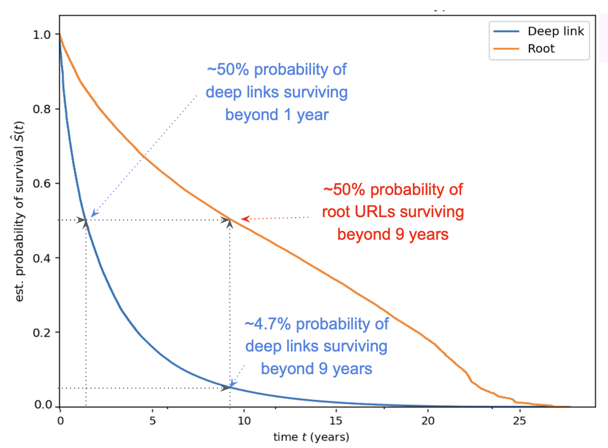

2023 – present
Web Page Lifespans Through Longitudinal Sampling of the Wayback Machine
A sample of 27.3 million URLs from the Wayback Machine, traced across 3.8 billion snapshots and 25 years. To measure lifespans accurately, this work introduces the Multi-Resident URL framework, which separates a URL from the successive pages that occupy it over time.

JCDL 2026 Doctoral Consortium · JCDL 2025 (two papers) · arXiv 2025 · Talk slides